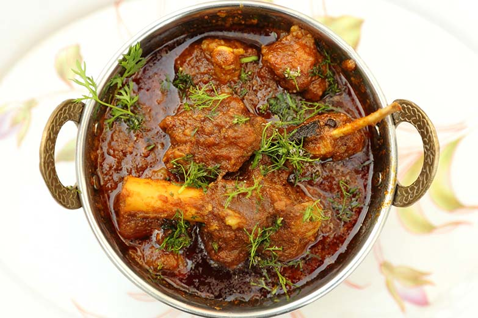

Home
Qorma

Description:
Qorma is a rich and flavorful South Asian curry made with meat slow-cooked in a blend of aromatic spices, yogurt, and fried onions.
Known for its thick, silky gravy, qorma is often prepared with chicken, mutton, or beef and is popular at weddings
and special occasions. The dish is delicately spiced—using ingredients like
cardamom, cinnamon, and cloves—creating a deep, royal flavor.
Typically served with naan, roti, or rice, qorma is a comforting and
luxurious meal that showcases the essence of traditional Mughlai cuisine.
Ingredients:
- Chicken
- Yogurt
- Onions
- Ginger-Garlic Paste
- Whole Spices
- Oil or Ghee – ½ cup
- Salt
- Kewra Water or Rose Water
Steps:
- Heat oil and fry sliced onions until deep golden brown. Remove and crush them; keep aside.
- In the same oil, add whole spices. After a few seconds, add ginger-garlic paste and cook for a minute. Add chicken and fry until it changes color.
- Add whisked yogurt, salt, and ground spices. Stir well and cook on medium heat until oil separates.
- Add the crushed fried onions and a little water if needed. Cover and cook on low heat until chicken is tender and gravy thickens.
- Sprinkle garam masala and kewra/rose water (if using). Simmer for 2-3 minutes on low heat.
- Serve hot with naan, roti, or steamed rice.